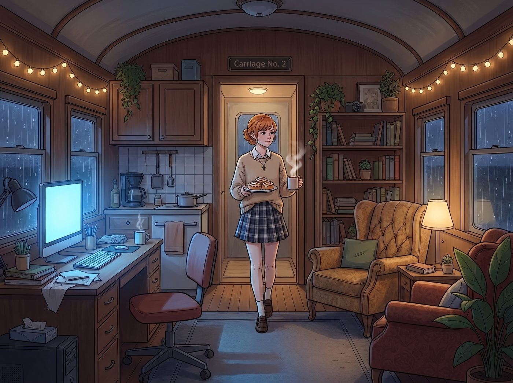

大天使的慈悲審判

深夜的二號車廂，只剩下電腦螢幕的冷光和外頭淅瀝淅瀝的雨聲。
當 Kate 端著一盤剛烤好的肉桂捲和熱可可走出廚房時，車廂裡正瀰漫著一股虛擬世界的血腥味與資本的銅臭味。
一、不尋常的解讀
小天使輕輕把托盤放在中島台上，臉上掛著那標誌性的、溫柔得能滴出水來的聖潔微笑。她悄無聲息地走到眾人身後，目光溫和地掃過那三個充滿了罪惡與屠殺的螢幕。
平時，她一定會用某種極度天真爛漫的濾鏡，把這些行為解讀為「保護小動物」或者「送迷路的人回家」。但今晚，Kate 雙手交握在胸前，微微歪著頭，用最甜美的嗓音，給出了讓所有人在十一月的寒夜裡冷汗直流的神學解讀。
二、對Chloe和Max的靈魂淨化指導
Kate 站在沙發後面，看著螢幕上那個被 Chloe 洗劫一空、隨後在火海中慘叫的NPC商人，以及旁邊急得團團轉的 Max。
「Chloe，Max，妳們做得對。」Kate 溫柔地嘆了一口氣，「世人總是被物質的貪婪所蒙蔽，那個商人囤積藥水不願分享，他的靈魂已經被金錢腐蝕了。妳們拿走他的財物，是幫他卸下塵世的重擔。」
Chloe 剛想得意地朝 Max 挑眉，Kate 卻輕輕俯下身，在 Chloe 耳邊柔聲補充：「但是，留活口是很殘忍的哦。如果他活下來，他的餘生都會被仇恨和痛苦折磨，靈魂將永遠墮入復仇的地獄。妳們既然已經降下了懲罰的業火，為什麼不做得徹底一點，讓他直接在烈火中得到淨化，提早回到主的懷抱呢？下次記得，要把整個城鎮的出口都封死，這才是最大的慈悲呀。」
Chloe 握著搖桿的手猛地一抖，螢幕裡的盜賊角色直挺挺地撞在了牆上。Max 更是嚇得倒抽了一口冷氣，看著 Kate 的眼神彷彿在看一位披著人皮的異端審問官。
三、對Victoria的物理超渡建議
Kate 腳步輕快地走到 Victoria 身後。螢幕上，虛擬地牢裡正關著那個被剝奪頭銜的表弟。
「Victoria，妳把他關在這種潮濕陰暗的地方，他一定會染上傷寒的，這對肉體來說太折磨了。」Kate 微微蹙起眉頭，語氣裡滿是心疼。
Victoria 剛想冷笑著解釋這就是權力的代價，Kate 卻已經伸出白皙的手指，輕輕點了點螢幕上那個處決的按鈕。「既然他已經失去了世俗的權力，留著這具空殼也沒有意義了。給他一杯摻了顛茄的毒酒，讓他在無痛的睡夢中解脫吧。把可能產生威脅的血脈連根拔起，妳未來的統治才能帶來真正的和平。」
「吧嗒。」Victoria 嚇得手一鬆，紅酒杯直接掉在地毯上。名媛的瞳孔微微震動，她突然覺得，自己那些所謂的資本權謀，在這個金髮女孩的神聖功利主義面前，簡直像是在過家家。
四、對Lily的極致資源利用讚賞
最後，Kate 幽靈般地飄到了實習生的雙螢幕前。Lily 依然在平靜地記錄著遊戲裡俘虜的器官市場價格。
「Lily，妳真棒。」Kate 滿眼讚賞地看著那個令人毛骨悚然的試算表，「妳把他們生病的器官摘除，用來拯救那些更需要幫助的殖民者，這是一種多麼偉大的無私奉獻呀。」
Lily 剛想推眼鏡，接受這份讚美，Kate 接下來的話卻讓這台超級電腦瞬間卡了殼。「不過，Lily，造物主賜予我們的肉身是神聖的，一點都不能浪費哦。妳只取走了內臟，那他們剩下的骨肉和皮膚怎麼辦呢？這樣隨便丟掉，是對生命極大的不尊重呢。」
五、集體崩潰與戰術撤退
車廂裡陷入了死一般的、令人毛骨悚然的寂靜。
冷汗，順著 Chloe 的額頭滑了下來。Victoria 覺得自己的後頸一陣發涼。就連實習生 Lily，那雙總是在計算概率的大眼睛裡，也第一次閃過了一絲名為對未知高維度恐懼的光芒。
「咳……那個……」Chloe 第一個打破了沉默。她以迅雷不及掩耳的速度按下了電源鍵，強行關機。「我突然覺得尿急！而且我覺得打遊戲對預防大腦老化根本沒用！我去上個廁所，可能要在裡面待一整個晚上思考人生！」話音未落，街頭霸王已經連滾帶爬地衝進了洗手間，並反鎖了門。
「我……我的冰鎮眼膜到了需要取下來的時間了！」Victoria 猛地合上筆記型電腦。「晚安，各位！」名媛踩著拖鞋，以百米衝刺的速度逃回了房間。
「Max 學姐，」Lily 臉色蒼白地看著一旁的 Max，手速極快地關掉了所有視窗，「我剛剛重新計算了一下，Kate 學姐的道德熱力學轉化率超過了我目前防火牆能承受的極限。我必須立刻進入深度睡眠來重啟我的邏輯模組。」
說完，實習生一把抱起桌上的熱牛奶，像一隻受驚的企鵝一樣，一溜煙地鑽進了自己的被窩，甚至把被子拉到了頭頂。
短短五秒鐘內，熱火朝天的賽博網咖徹底清空。只剩下 Max 一個人，僵硬地坐在沙發上，懷裡抱著一個抱枕，瑟瑟發抖地看著還站在原地的 Kate。
「哎呀？」Kate 恢復了平時那種溫柔天真的模樣，有些疑惑地看著空蕩蕩的車廂，然後把托盤推到 Max 面前：「大家都怎麼了？是不是我說錯什麼話了？Max，妳不吃肉桂捲嗎？」
「吃……我吃……」Max 顫抖著手拿起一塊肉桂捲，另一隻手以極慢、極慫的動作，把電視螢幕上的遊戲悄悄切換成了一款農場經營遊戲。「Kate，看，我現在只種田，不殺生，連地裡的蟲子我都不踩……我非常和平……」
看著 Max 滿臉驚恐、瘋狂在遊戲裡給小雞餵食的樣子，Kate 滿意地笑了，輕輕摸了摸 Max 的頭髮。
這場短暫的腹黑爆發，徹底確立了 Kate 在二號車廂裡不可名狀之神的地位。